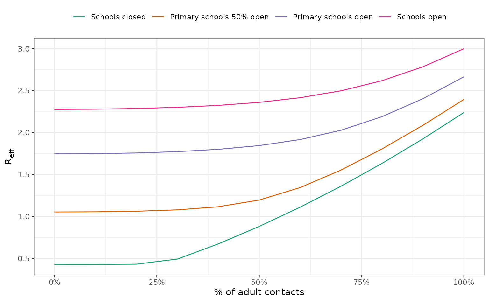

library(finalsize)
library(dplyr)
#>
#> Attaching package: 'dplyr'
#> The following objects are masked from 'package:stats':
#>
#> filter, lag
#> The following objects are masked from 'package:base':
#>
#> intersect, setdiff, setequal, union
library(tidyr)
library(ggplot2)The finalsize package provides a quick way to calculate the
effective reproduction number using the r_eff() function.
This vignette shows how to use the contact_scaling argument
to calculate the effective reproduction number for different
scenarios.
Setup
We access social contacts data for the U.K. for six age groups: three school-age groups of 0 – 4, 5 – 11, 12 – 17, and three adult groups of 18 – 39, 40 – 65, and 65+.
Age groups are chosen to model the effect of school closures and resulting reduction in social contacts for school-age groups on .
We assume all age groups are completely susceptible to infection.
polymod <- socialmixr::polymod
contact_data <- socialmixr::contact_matrix(
polymod,
countries = "United Kingdom",
age.limits = c(0, 5, 12, 17, 40, 65),
symmetric = TRUE
)
#> Removing participants that have contacts without age information. To change this behaviour, set the 'missing.contact.age' option
#> Warning in pop_age(survey.pop, part.age.group.present, ...): Not all age groups represented in population data (5-year age band).
#> Linearly estimating age group sizes from the 5-year bands.
# get the contact matrix and demography data
contact_matrix <- t(contact_data$matrix)
demography_vector <- contact_data$demography$population
# scale the contact matrix so the largest eigenvalue is 1.0
# this is to ensure that the overall epidemic dynamics correctly reflect
# the assumed value of R0
contact_matrix <- contact_matrix / max(Re(eigen(contact_matrix)$values))
# divide each row of the contact matrix by the corresponding demography
# this reflects the assumption that each individual in group {j} make contacts
# at random with individuals in group {i}
contact_matrix <- contact_matrix / demography_vector
n_demo_grps <- length(demography_vector)
# all individuals are equally and highly susceptible
n_susc_groups <- 1L
susc_guess <- 1.0
susc_uniform <- matrix(
data = susc_guess,
nrow = n_demo_grps,
ncol = n_susc_groups
)
p_susc_uniform <- matrix(
data = 1.0,
nrow = n_demo_grps,
ncol = n_susc_groups
)Scenarios of contact reduction
We model four scenarios of school closures, and multiple levels of scaling of adult social contacts.
Note that all values and assumptions are solely illustrative.
# create an age-specific scaling vector for re-use
scaling_factor <- rep(1, n_demo_grps)
# adult age groups
i_adult <- c(4, 5, 6)
n_school_age <- 3LWe assume that:
Full school closures reduce all school-age groups’ contacts by 80%;
0-5 year olds’ contacts are not affected in any other scenario;
When 50% of 5-11 year olds are at school, contacts are reduced by 40%;
12-17 year olds have an 80% reduction in contacts except when all schools are open;
Adults’ social contacts are not affected by school closures.
# create scenarios of school closures
scenarios <- factor(
c("schools_closed", "ps_half_open", "ps_open", "schools_open"),
levels = c("schools_closed", "ps_half_open", "ps_open", "schools_open")
)
scenario_names <- c(
"Schools closed", "Primary schools 50% open",
"Primary schools open", "Schools open"
)
school_scaling <- list(
schools_closed = rep(0.2, n_school_age), # full closure cuts contacts by 80%
ps_half_open = c(1.0, 0.6, 0.2), # 50% 5-11 yr olds cuts contacts by 40%
ps_open = c(1.0, 1.0, 0.2),
schools_open = rep(1.0, n_school_age)
)
# make a tibble and cross-join with scaling values
scenarios <- tibble(
scenarios,
school_scaling
)
scaling_values <- seq(0.0, 1.0, 0.1) # adult scaling from 0% - 100%
scenarios <- crossing(
scenarios, scaling_values
)
# combine adult and school-age contact scaling values for 4 * 11 scenarios
scenarios <- mutate(
scenarios,
contact_scaling = Map(
school_scaling, scaling_values,
f = function(x, y) {
scaling_factor <- c(x, rep(y, 3)) # all adult contacts scaled the same
}
)
)
# calculate R_eff assuming R0 = 3.0
r0 <- 3.0
scenarios <- mutate(
scenarios,
r_eff = vapply(
contact_scaling,
function(x) {
r_eff(
r0,
contact_matrix, demography_vector, susc_uniform,
p_susc_uniform,
contact_scaling = x
)
}, numeric(1)
)
)We plot the values.
ggplot(scenarios) +
geom_line(
aes(scaling_values, r_eff, col = scenarios)
) +
scale_color_brewer(
palette = "Dark2",
labels = scenario_names
) +
scale_x_continuous(
labels = scales::percent
) +
scale_y_continuous(
breaks = seq(0.5, 3, 0.5)
) +
theme_bw() +
labs(
x = "% of adult contacts",
y = "R<sub>eff</sub>",
colour = NULL
) +
theme(
axis.title.y.left = ggtext::element_markdown(),
legend.position = "top"
)